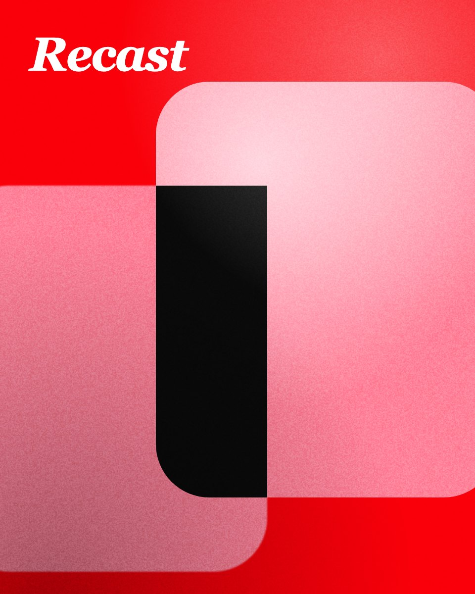

Frames
Every box with a fill, border, radius or clip becomes a frame.
FillStrokeClip
Every section below uses something PageRecast turns into a Figma feature. Capture this page at a few widths, in light and dark, paste it into Figma and compare the two.
Two families, nine weights, an optical-size axis and mixed inline styles.
Text layers and text styles
Display 64
Title 40 in italic
Headline 24 in the sans
Body 17 keeps bold runs, italic runs,
links, inline code and
highlighted words inside one text layer, with the line breaks exactly
where the browser put them.
Eight tokens that change between light and dark. Capture both themes.
Colour variables with Light and Dark modes
Rows, columns, gaps, padding, wrapping and alignment, all from flexbox.
Auto Layout, checked child by child
Every box with a fill, border, radius or clip becomes a frame.
Kept only where every child lands within 1.5 px of the page.
Repeated type becomes a style you can change in one place.
Gradients, shadows, blur, borders and corners set one by one.
Fills, strokes and effects
Inline SVG stays vector. Images keep their crop and fit.
Vector layers and image fills

Form fields are captured as they are right now: typed, checked or chosen.
Frames and text, at their current state
Rows and cells keep their borders, alignment and numbers.
Nested frames with tabular figures
| Frame | Width | Sized for | Theme |
|---|---|---|---|
| Desktop | 1440 | Laptops and desktop displays | Light |
| Tablet | 768 | Tablets held upright | Dark |
| Mobile | 390 | Most current phones | Light |